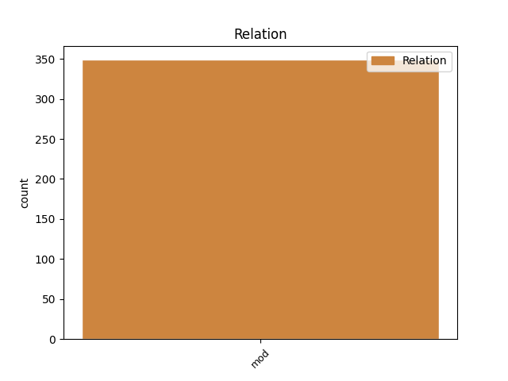
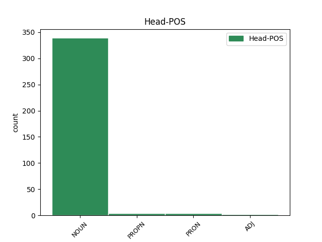
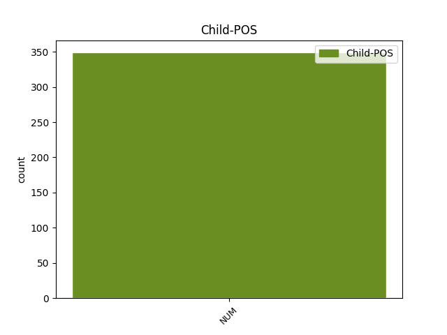

Distribution of features within this leaf



Agreement Rules sorted by frequency.
- When the dependent token is the modifer(mod) of the head token, and the dependent token is NUM.
1 Під _ _ _ _ 0 _ _ _
2 час _ _ _ _ 0 _ _ _
3 показу _ _ _ _ 0 _ _ _
4 у _ _ _ _ 0 _ _ _
5 США _ _ _ _ 0 _ _ _
6 , _ _ _ _ 0 _ _ _
7 що _ _ _ _ 0 _ _ _
8 розпочався _ _ _ _ 0 _ _ _
9 18 _ _ _ _ 0 _ _ _
10 вересня _ _ _ _ 0 _ _ _
11 2015 _ _ _ _ 0 _ _ _
12 року _ _ _ _ 0 _ _ _
13 , _ _ _ _ 0 _ _ _
14 протягом _ _ _ _ 0 _ _ _
15 першого _ _ _ _ 0 _ _ _
16 тижня _ _ _ _ 0 _ _ _
17 фільм _ _ _ _ 0 _ _ _
18 був _ _ _ _ 0 _ _ _
19 показаний _ _ _ _ 0 _ _ _
20 у _ _ _ _ 0 _ _ _
21 545 545 NUM Mlc-l Case=Loc|NumType=Card|Uninflect=Yes 22 mod _ Id=39r6|LTranslit=545|Translit=545
22 кінотеатрах кінотеатр NOUN Ncmpln Animacy=Inan|Case=Loc|Gender=Masc|Number=Plur 0 _ _ _
23 і _ _ _ _ 0 _ _ _
24 зібрав _ _ _ _ 0 _ _ _
25 7 222 035 _ _ _ _ 0 _ _ _
26 $ _ _ _ _ 0 _ _ _
27 , _ _ _ _ 0 _ _ _
28 що _ _ _ _ 0 _ _ _
29 на _ _ _ _ 0 _ _ _
30 той _ _ _ _ 0 _ _ _
31 час _ _ _ _ 0 _ _ _
32 дозволило _ _ _ _ 0 _ _ _
33 йому _ _ _ _ 0 _ _ _
34 зайняти _ _ _ _ 0 _ _ _
35 5 _ _ _ _ 0 _ _ _
36 місце _ _ _ _ 0 _ _ _
37 серед _ _ _ _ 0 _ _ _
38 усіх _ _ _ _ 0 _ _ _
39 прем'єр _ _ _ _ 0 _ _ _
40 . _ _ _ _ 0 _ _ _
Disagree Examples:
1 Стандартною _ _ _ _ 0 _ _ _
2 вважається _ _ _ _ 0 _ _ _
3 палета _ _ _ _ 0 _ _ _
4 з _ _ _ _ 0 _ _ _
5 площею _ _ _ _ 0 _ _ _
6 піддона _ _ _ _ 0 _ _ _
7 ( _ _ _ _ 0 _ _ _
8 основи _ _ _ _ 0 _ _ _
9 / _ _ _ _ 0 _ _ _
10 крайніх _ _ _ _ 0 _ _ _
11 точок _ _ _ _ 0 _ _ _
12 габариту _ _ _ _ 0 _ _ _
13 ) _ _ _ _ 0 _ _ _
14 менше _ _ _ _ 0 _ _ _
15 ніж _ _ _ _ 0 _ _ _
16 2 2 NUM Mlcmsn Case=Nom|Gender=Masc|NumType=Card|Uninflect=Yes 17 mod _ Id=2fax|LTranslit=2|Translit=2
17 м2 м2 NOUN Y Abbr=Yes|Animacy=Inan|Case=Gen|Gender=Masc|Number=Plur|Uninflect=Yes 0 _ _ _
18 . _ _ _ _ 0 _ _ _
1 Водночас _ _ _ _ 0 _ _ _
2 кількість _ _ _ _ 0 _ _ _
3 дітей _ _ _ _ 0 _ _ _
4 і _ _ _ _ 0 _ _ _
5 підлітків _ _ _ _ 0 _ _ _
6 ( _ _ _ _ 0 _ _ _
7 0 0 NUM Mlc-n Case=Nom|NumType=Card|Uninflect=Yes 10 mod _ Id=0ndj|LTranslit=0|SpaceAfter=No|Translit=0
8 – _ _ _ _ 0 _ _ _
9 14 _ _ _ _ 0 _ _ _
10 років рік NOUN Ncmpgn Animacy=Inan|Case=Gen|Gender=Masc|Number=Plur 0 _ _ _
11 ) _ _ _ _ 0 _ _ _
12 з _ _ _ _ 0 _ _ _
13 23 _ _ _ _ 0 _ _ _
14 % _ _ _ _ 0 _ _ _
15 у _ _ _ _ 0 _ _ _
16 1991 _ _ _ _ 0 _ _ _
17 р _ _ _ _ 0 _ _ _
18 . _ _ _ _ 0 _ _ _
19 знизилася _ _ _ _ 0 _ _ _
20 у _ _ _ _ 0 _ _ _
21 2014 _ _ _ _ 0 _ _ _
22 р _ _ _ _ 0 _ _ _
23 . _ _ _ _ 0 _ _ _
24 до _ _ _ _ 0 _ _ _
25 15 _ _ _ _ 0 _ _ _
26 , _ _ _ _ 0 _ _ _
27 1 _ _ _ _ 0 _ _ _
28 % _ _ _ _ 0 _ _ _
29 . _ _ _ _ 0 _ _ _
1 Він _ _ _ _ 0 _ _ _
2 вривається _ _ _ _ 0 _ _ _
3 какофонічною _ _ _ _ 0 _ _ _
4 й _ _ _ _ 0 _ _ _
5 аритмічною _ _ _ _ 0 _ _ _
6 стукавнею _ _ _ _ 0 _ _ _
7 в _ _ _ _ 0 _ _ _
8 мелодію _ _ _ _ 0 _ _ _
9 , _ _ _ _ 0 _ _ _
10 де _ _ _ _ 0 _ _ _
11 такти _ _ _ _ 0 _ _ _
12 різко _ _ _ _ 0 _ _ _
13 й _ _ _ _ 0 _ _ _
14 дисонантно _ _ _ _ 0 _ _ _
15 не _ _ _ _ 0 _ _ _
16 сходяться _ _ _ _ 0 _ _ _
17 , _ _ _ _ 0 _ _ _
18 як _ _ _ _ 0 _ _ _
19 два два NUM Mlcmsn Case=Nom|Gender=Masc|NumType=Card 21 mod _ Id=0pu7|LTranslit=dva|Translit=dva
20 різних _ _ _ _ 0 _ _ _
21 годинники годинник NOUN Ncmpan Animacy=Inan|Case=Acc|Gender=Masc|Number=Plur 0 _ _ _
22 . _ _ _ _ 0 _ _ _
1 Ми _ _ _ _ 0 _ _ _
2 кровавились _ _ _ _ 0 _ _ _
3 за _ _ _ _ 0 _ _ _
4 ці _ _ _ _ 0 _ _ _
5 ідеали _ _ _ _ 0 _ _ _
6 повних _ _ _ _ 0 _ _ _
7 три три NUM Mlc-n Case=Nom|NumType=Card 8 mod _ Id=17tn|LTranslit=try|Translit=try
8 роки рік NOUN Ncmpan Animacy=Inan|Case=Acc|Gender=Masc|Number=Plur 0 _ _ _
9 в _ _ _ _ 0 _ _ _
10 боротьбі _ _ _ _ 0 _ _ _
11 проти _ _ _ _ 0 _ _ _
12 німецької _ _ _ _ 0 _ _ _
13 окупації _ _ _ _ 0 _ _ _
14 - _ _ _ _ 0 _ _ _
15 і _ _ _ _ 0 _ _ _
16 тепер _ _ _ _ 0 _ _ _
17 продовжуємо _ _ _ _ 0 _ _ _
18 нашу _ _ _ _ 0 _ _ _
19 боротьбу _ _ _ _ 0 _ _ _
20 за _ _ _ _ 0 _ _ _
21 ті _ _ _ _ 0 _ _ _
22 самі _ _ _ _ 0 _ _ _
23 ідеали _ _ _ _ 0 _ _ _
24 проти _ _ _ _ 0 _ _ _
25 окупації _ _ _ _ 0 _ _ _
26 большевицької _ _ _ _ 0 _ _ _
27 . _ _ _ _ 0 _ _ _
1 Тижнів тиждень NOUN Ncmpgn Animacy=Inan|Case=Gen|Gender=Masc|Number=Plur 0 _ _ _
2 через _ _ _ _ 0 _ _ _
3 три три NUM Mlc-a Case=Acc|NumType=Card 1 mod _ Id=1krn|LTranslit=try|SpaceAfter=No|Translit=try
4 , _ _ _ _ 0 _ _ _
5 як _ _ _ _ 0 _ _ _
6 книжка _ _ _ _ 0 _ _ _
7 з’явиться _ _ _ _ 0 _ _ _
8 на _ _ _ _ 0 _ _ _
9 вітринах _ _ _ _ 0 _ _ _
10 книгарень _ _ _ _ 0 _ _ _
11 , _ _ _ _ 0 _ _ _
12 я _ _ _ _ 0 _ _ _
13 гадаю _ _ _ _ 0 _ _ _
14 зробити _ _ _ _ 0 _ _ _
15 ще _ _ _ _ 0 _ _ _
16 публічну _ _ _ _ 0 _ _ _
17 лекцію _ _ _ _ 0 _ _ _
18 при _ _ _ _ 0 _ _ _
19 громаді _ _ _ _ 0 _ _ _
20 академічних _ _ _ _ 0 _ _ _
21 службовців _ _ _ _ 0 _ _ _
22 — _ _ _ _ 0 _ _ _
23 з _ _ _ _ 0 _ _ _
24 відчитанням _ _ _ _ 0 _ _ _
25 кількох _ _ _ _ 0 _ _ _
26 оповідань _ _ _ _ 0 _ _ _
27 в _ _ _ _ 0 _ _ _
28 цілості _ _ _ _ 0 _ _ _
29 — _ _ _ _ 0 _ _ _
30 щось _ _ _ _ 0 _ _ _
31 на _ _ _ _ 0 _ _ _
32 зразок _ _ _ _ 0 _ _ _
33 того _ _ _ _ 0 _ _ _
34 читання _ _ _ _ 0 _ _ _
35 , _ _ _ _ 0 _ _ _
36 яке _ _ _ _ 0 _ _ _
37 улаштував _ _ _ _ 0 _ _ _
38 С _ _ _ _ 0 _ _ _
39 . _ _ _ _ 0 _ _ _
40 О _ _ _ _ 0 _ _ _
41 . _ _ _ _ 0 _ _ _
42 Єфремов _ _ _ _ 0 _ _ _
43 півтора _ _ _ _ 0 _ _ _
44 місяця _ _ _ _ 0 _ _ _
45 тому _ _ _ _ 0 _ _ _
46 на _ _ _ _ 0 _ _ _
47 пошанування _ _ _ _ 0 _ _ _
48 В _ _ _ _ 0 _ _ _
49 . _ _ _ _ 0 _ _ _
50 Стефаника _ _ _ _ 0 _ _ _
51 . _ _ _ _ 0 _ _ _